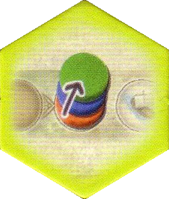
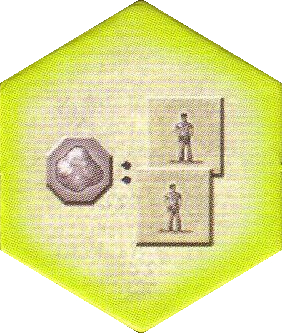
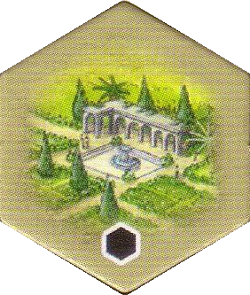
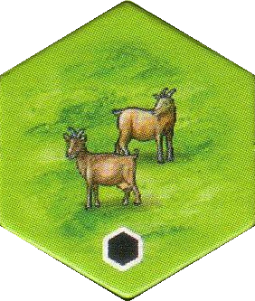
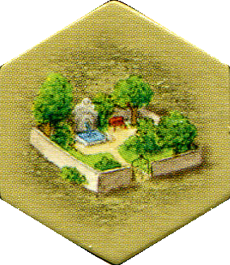
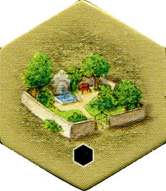
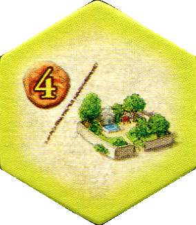

1st Expansion
New Player Boards 10a-h
May be used with all standard rules or with the following two rule modifications:
- Hex tiles placed onto estate must not only be adjacent to another hex tile, but also connected to a castle either directly or indirectly (through the same color).
- A player may use both dice actions and sacrifice 5 victory points to move any non-black-backed castle from the game supply not currently being used to an empty storage space on his player board.
2nd Expansion
New Hex Tiles
| Sequential Order |
|

The player with this tile on his estate is always at the top of any stack on the turn order track, even when another player would normally be placed on top (i.e. when moving up from one space behind).
|
| Worker Tiles |
|

The player with this tile on his estate may buy 2 worker tiles with 1 silverling.
|
| Park |
|

- This tile functions as ANY building you want when you place it on your estate.
- This tile also functions as ANY building you want for the purpose of scoring knowledge tiles 16-23 at the end of game, even if different than the building declared at placement.
|
| Goats |
|

- This tile functions as ANY animal type you want when you place it on your estate.
- This tile always counts as 2 extra points after placing additional animals on the same pasture, even if the newly placed tiles are not the same animal type the goats were declared as at placement.
- This tile counts as an additional animal type for the purpose of scoring knowledge tile 24 at end of game.
|
4th Expansion
Monastary Boards 13a-h
All standard rules apply with the following two additions:
- Any time a player makes a straight connection between any 2 monastaries (possible up to 3 times), he earns 5 victory points.
- The first player to connect all 3 monastaries gets the large monastary bonus tile (5-7 points) and the second gets the small monastary bonus tiles (2-4 points).
5th Expansion
Pleasure Garden (Lustgarten)
Includes 9 Pleasure Garden building tiles (2 black-backed) and 1 Pleasure Garden knowledge tile.
| Pleasure Garden Building Tile |
|


- As soon as you add a Pleasure Garden to your estate, you get a free action using the number of the white dice (may be adjusted using worker tiles), including "trading" the white dice for two worker tiles.
- Be sure to keep the white dice "static" during the round (do not rotate it to match a worker tile adjustment or move it if "trading" for 2 worker tiles.), as another player may also need to use it in the same round, should they also place a Pleasure Garden on their estate.
|
| Pleasure Garden Knowledge Tile |
|

The player with this tile on his estate earns 4 points for every Pleasure Garden on his estate and end of game
|
6th Expansion
Cloisters
Includes 5 Cloister Tiles
- At the start of each round, place one cloister in the black depot.
- A cloister has no function except as a place-filler to help complete any region type; therefore, cities may have more than one cloister, since it does not function as a building.
- Any region with cloisters is considered to increase in size by 1 for each cloister in it, but regions may never exceed 8 in size.